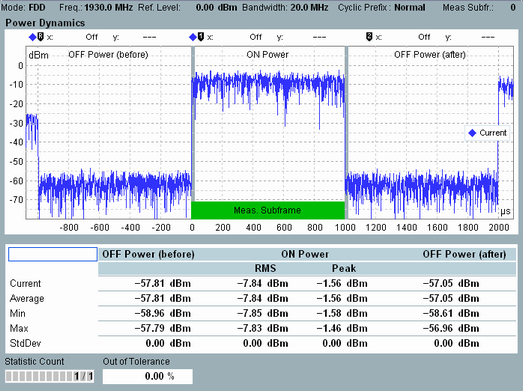
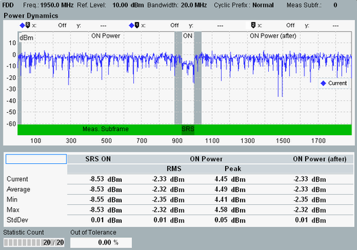
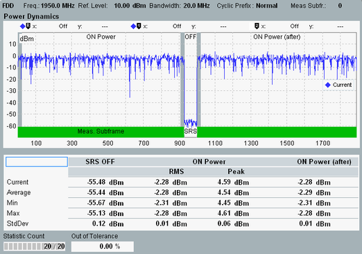

The power dynamics view shows a diagram and a statistical overview of related power results. For signals with carrier aggregation, only the configured "Measurement Carrier" is measured.
The following figure shows measurement results for the general ON/OFF time mask.

The following statements apply also to power dynamics measurements with other time masks.
The diagram shows the UE output power vs. time, sampled with 48 Ts (1.5625 µs). The measured trace covers the range from -1100 µs to +2098.4375 µs relative to the start of the "Measure Subframe" (see "Measurement Subframe"). The diagram shows a subsection of the measured trace, depending on the configured time mask.
The individual ON and OFF power areas are labeled in the diagram. ON power periods are marked by a green horizontal bar. The measured subframe and an eventual SRS period at the end of the "Measure Subframe" are indicated. Exclusion periods are marked by gray vertical bars.
The table below the diagram shows a statistical evaluation of the ON power and OFF power values. The table columns are not necessarily ordered in the same way as the related diagram sections.
- "ON Power, RMS/Peak":
Mean value and peak value of the UE output power over the "Measure Subframe" (minus exclusion period and SRS period) - "OFF Power (after)", "ON Power (after)":
Mean power in one subframe after the "Measure Subframe" (minus exclusion period) - "OFF Power (before)":
Mean power in one subframe before the "Measure Subframe" - "SRS ON/OFF":
Mean power in the SRS period at the end of the "Measure Subframe"
For the parameters at the bottom of the view, see "Common View Elements".
For query of the diagram and table contents via remote control, see "Power Dynamics Results".
Signal configuration for general time mask The "Measure Subframe" must be on and one subframe before and after the "Measure Subframe" must be off. However, it is recommended to configure two subframes off before and after the "Measure Subframe" (OFF, OFF, ON, OFF, OFF). This configuration guarantees that the measured "OFF Power (before)" is not falsified by power contributions of a preceding ON subframe ramped down too slowly. And that the "OFF Power (after)" is not falsified by a subsequent ON subframe ramped up too early. The trace sections below -1000 µs and above 2000 µs belong to the second subframes before and after the "Measure Subframe". In the figure above, they are on. |
Signal configuration for SRS time masks The "Measure Subframe" and one subframe after the "Measure Subframe" must be on. At the end of the "Measure Subframe", there must be an SRS. Depending on the time mask, it must be a UE-specific SRS (SRS ON, UE transmitting) or a cell-specific SRS (SRS OFF, another UE assumed to transmit). For FDD, you can achieve this SRS configuration with the combined signal path scenario. In the signaling application, enable SRS and use the default SRS subframe configuration and SRS configuration index. In the measurement, set the "Measure Subframe" to subframe 0 for SRS ON and to subframe 5 for SRS OFF. |
The following figures show measurement results for the PUCCH / PUSCH / SRS time mask and the SRS blanking time mask.

